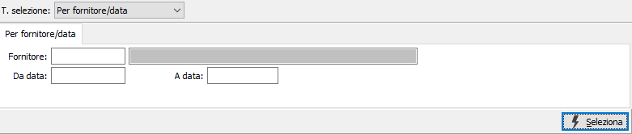
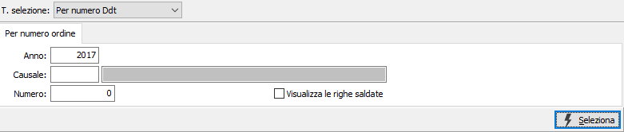
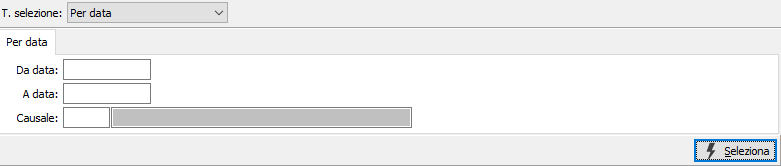
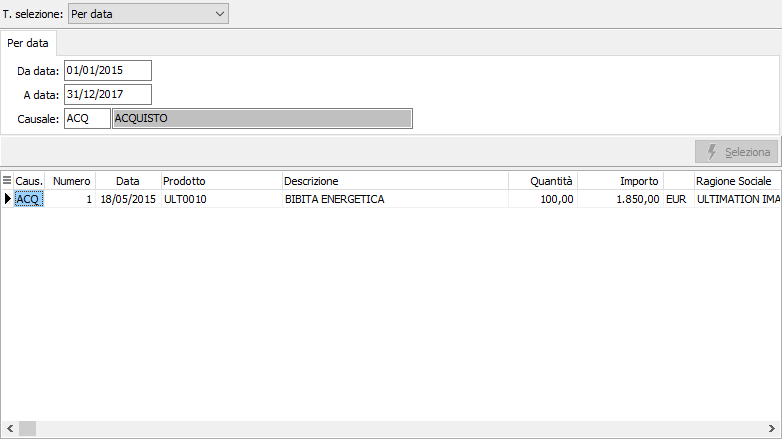

Saldo Ddt
Il programma consente di visualizzare, in base a tre diverse modalità di selezione, le righe di Ddt da evadere, allo scopo di effettuarne la chiusura e renderle non più fatturabili.
La finestra video si articola su due sezioni: nella sezione superiore, il pannello di input per inserire i parametri di selezione, varia in relazione al tipo di selezione.
Tipo selezione per fornitore / data

FORNITORE: codice del fornitore, presente in anagrafica fornitori, a cui si desidera limitare la selezione di analisi. Sul campo sono attive le funzioni di ricerca (F9).
DA DATA: eventuale data da cui deve iniziare l’analisi dei documenti relativamente ai precedenti parametri di selezione. Confermando a vuoto, l’analisi inizia con il primo documento valido.
A DATA: eventuale data con cui si desidera terminare l’analisi dei documenti relativamente ai precedenti parametri di selezione. Confermando a vuoto, l’analisi si conclude con l'ultimo documento valido.
Tipo selezione per numero Ddt

ANNO: inserire l'anno in cui è stato emesso il Ddt da saldare.
CAUSALE: codice della causale del documento che si vuole selezionare. Sul campo sono attive le funzioni di ricerca (F9).
NUMERO: inserire il numero del Ddt, relativo alla causale di cui al campo precedente, che si vuole selezionare.
VISUALIZZA RIGHE SALDATE: consente di richiamare le righe precedentemente saldate, per annullare il saldo (casella con segno di spunta).
Tipo selezione per data

DA DATA: eventuale data da cui deve iniziare l’analisi dei documenti da selezionare. Confermando a vuoto, l’analisi inizia con il primo documento valido.
A DATA: eventuale data con cui si desidera terminare l’analisi dei documenti da selezionare. Confermando a vuoto, l’analisi si conclude con l'ultimo documento valido.
CAUSALE: eventuale codice della causale dei documenti che si vogliono selezionare. Sul campo sono attive le funzioni di ricerca (F9).
Confermando i parametri di selezione inseriti tramite pressione del bottone Seleziona, viene avviata la selezione e nella griglia della sezione inferiore della maschera video vengono visualizzate le righe di Ddt coerenti con i parametri inseriti.

Per ciascun rigo di Ddt selezionato, vengono visualizzate causale, numero, data, codice e descrizione prodotto, quantità, importo, divisa e ragione sociale del cliente.
L’utente può scorrere le righe selezionate e, cliccando due volte sulle righe che si vogliono saldare e che, una volta effettuata la registrazione, verrà memorizzata come da non fatturare.
Per rendere effettivo l’intervento effettuato sui vari righi saldati, è necessario confermare premendo il bottone Salva o il tasto funzione F10.